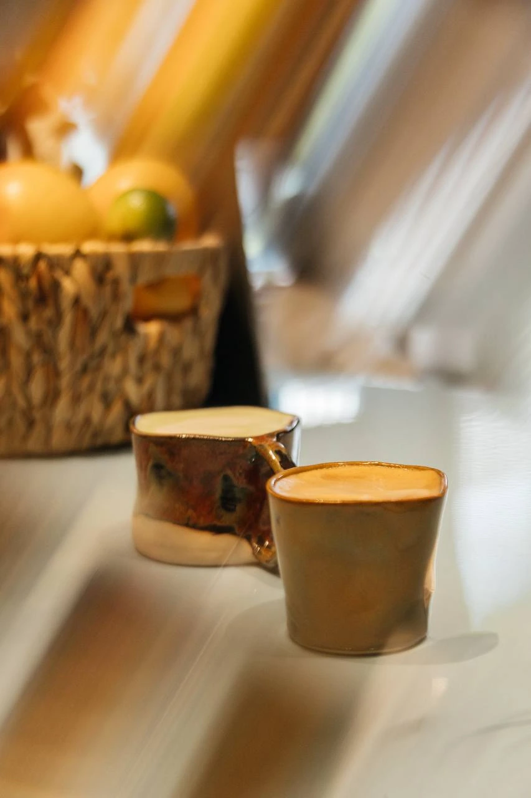
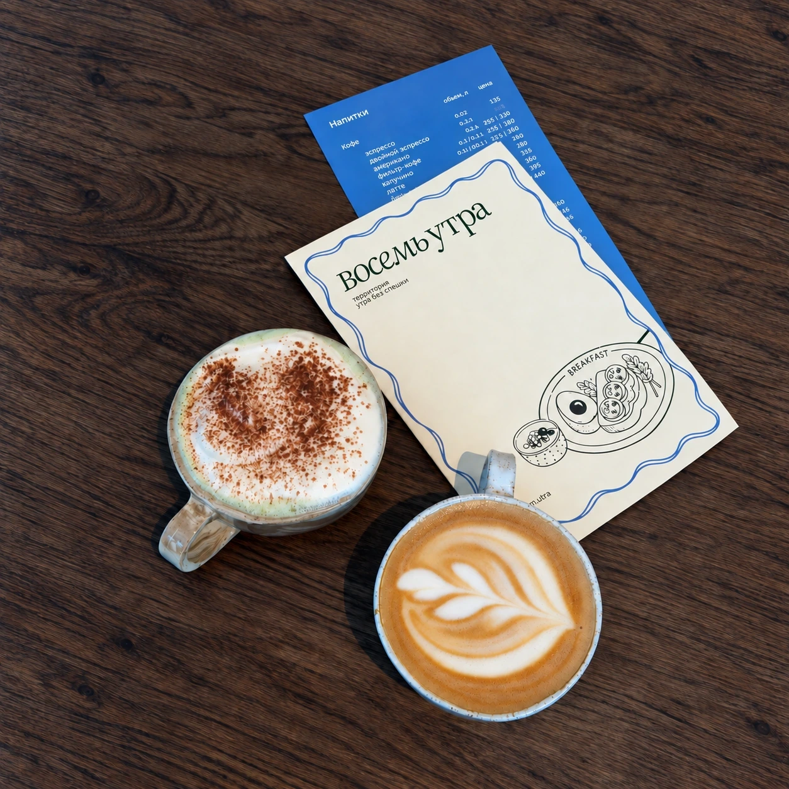
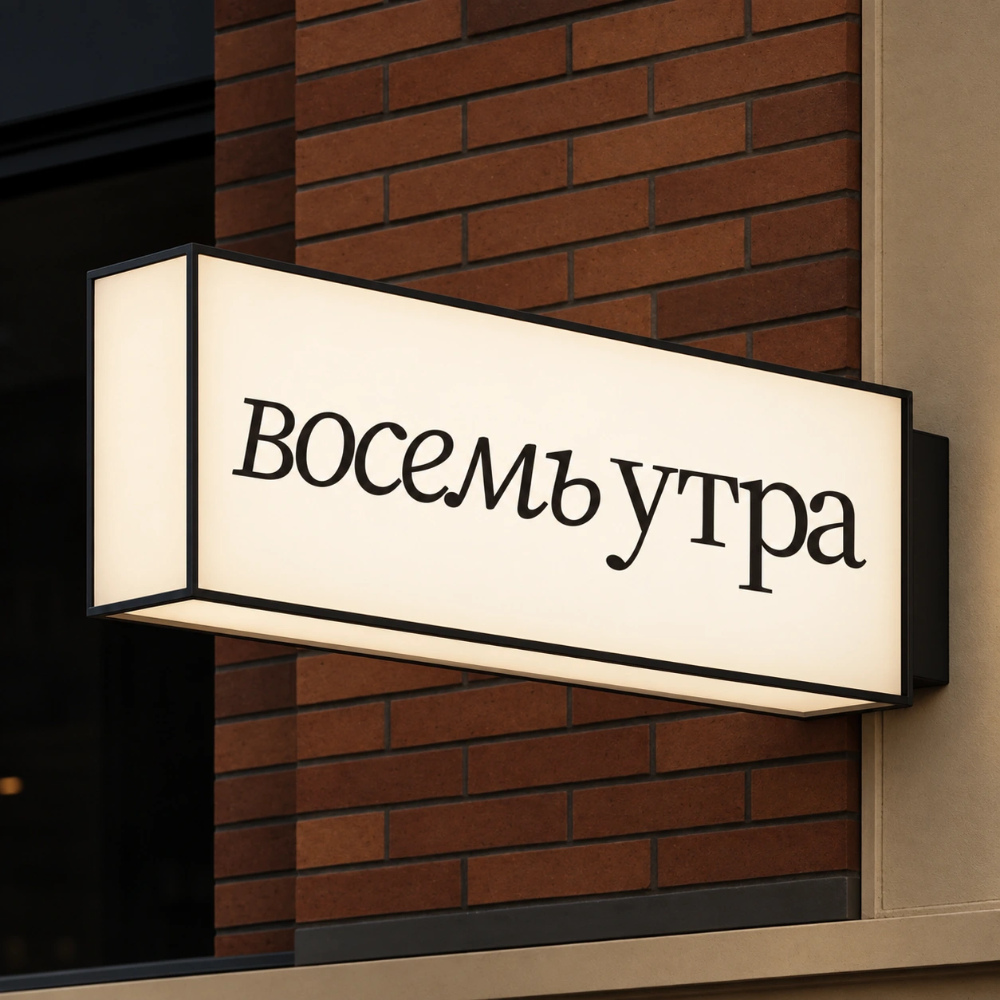

с собой или здесь01
Сначала — кофе
Для бодрого начала дня
и разговоров без спешки.
КОФЕ И ЗАВТРАКИ РЯДОМ С ДОМОМ
Любимый кофе, тёплый завтрак
и немного времени для себя.
ЖК «Сердце Столицы» · Шелепихинская наб., 34к6

ВАША КОФЕЙНЯ ПО СОСЕДСТВУ
Забежать за кофе по дороге.
Встретиться с близкими. Выдохнуть.
В «Восемь утра» есть время для простых вещей. Для тёплой чашки в ладонях, любимого завтрака и разговора, который не хочется заканчивать.
Мы рядом, когда хочется немного замедлиться и почувствовать себя на своём месте.
До встречи за кофеВ простом всегда прячется
самое нужное
Чашка кофе. Близкие рядом. Хорошее утро.
КЛУБ ГОСТЕЙ «ВОСЕМЬ УТРА»
Заходите за любимым.
А мы добавим немного приятного.
Присоединяйтесь к клубу гостей: копите бонусы с каждого заказа и возвращайтесь за новыми маленькими радостями.
Стать участникомПодробности программы можно уточнить
у команды кофейни.
возвращаем бонусами
с каждого заказа
МЫ БЛИЖЕ, ЧЕМ КАЖЕТСЯ
Ежедневно, 8:00 — 20:00
Построить маршрут